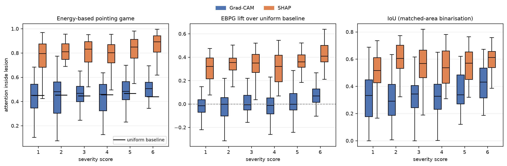
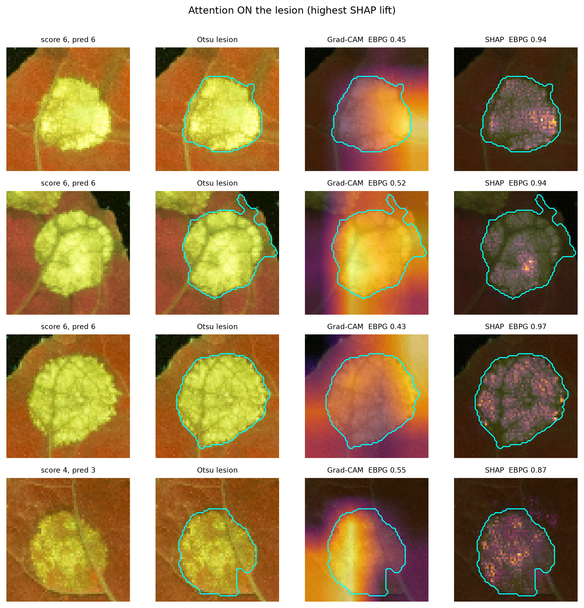
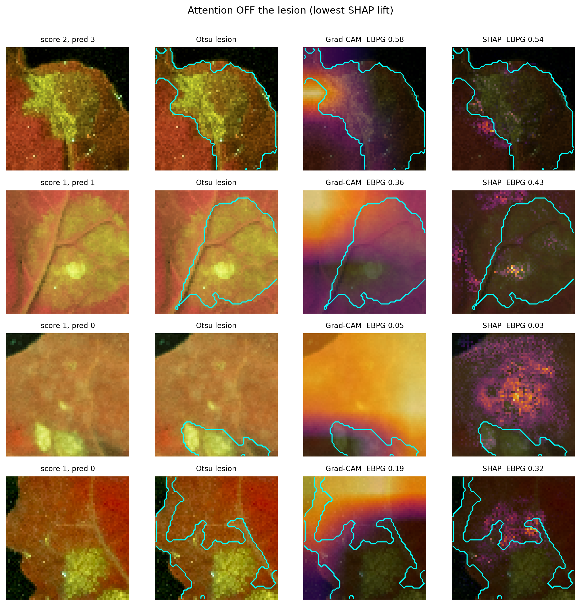
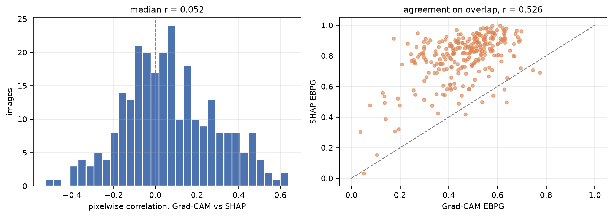
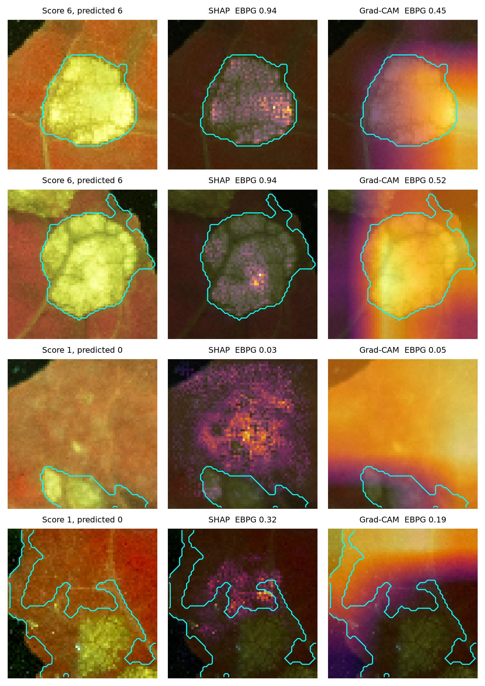

Where does the top CNN look? Grad-CAM and SHAP against the Otsu lesion
Date: 09/09/2026
GOHREP
Goal:
Take the single best CNN from the Medoid-CNN grid search (the top model by avg_vaf) and ask where in the image it is looking when it assigns a severity score. Produce two independent attribution maps — Grad-CAM and SHAP — and measure how much of each falls inside the Otsu-segmented cell death area, using the segmentation from the sibling dataset repo. Show examples where attention lands on the lesion and examples where it does not, quantify the overlap with metrics borrowed from the segmentation and saliency-evaluation literature, and identify images where the two methods disagree.
Hypotheses:
Attention concentrates on the lesion more than chance. The label is a property of the cell death area, so a model that has learned the task should weight those pixels above the surrounding healthy leaf.
The margin over chance will be modest. The crop is the scorer’s bounding box drawn around the lesion, so the lesion already occupies about half of every crop (measured below: mean 0.51). A map that simply spread attention evenly would score ~0.51 by construction, so only the lift above that is evidence of anything.
Grad-CAM and SHAP will agree on the coarse location but not in detail. They measure different things — Grad-CAM pools gradients over the last convolutional feature map, SHAP attributes to individual input pixels — and this network’s last conv layer is only 4x4, so Grad-CAM cannot resolve anything finer than a ~16 px block.
Where attention sits off-lesion, it will tend to sit on leaf tissue immediately around it rather than on the black background, since the background carries no colour information the model could use.
Rationale:
analyses/03 established that the top ~210 configs are statistically tied, so which model is “best” is arbitrary. That makes the question “is this model right for the right reasons?” more useful than “which model wins”. A model that scores lesion severity by looking at the lesion is one you can defend; one that scores well while looking at the background is exploiting something about the crop, not the biology.
Using two independent attribution methods guards against reading artefacts of a single method as findings, and the Otsu mask gives an objective, pre-existing definition of “the lesion” that was not built for this purpose.
Experimental plan:
Load the top CNN and verify it reproduces the test accuracy the grid search recorded.
Compute Grad-CAM and SHAP for every held-out test crop with score >= 1.
Load the Otsu masks (regenerated by export_otsu_masks.R on the same crops).
Score overlap with the energy-based pointing game, the pointing game, and IoU / Dice under matched-area binarisation.
Compare against the uniform-attention baseline that the crop geometry forces.
Show best and worst examples, boxplots by severity score, and the images where Grad-CAM and SHAP disagree most.
Why score 0 is excluded: a score of 0 means no cell death, so there is no lesion for a saliency map to agree with. export_otsu_masks.R still segments something on those crops (Otsu always returns a threshold), but it would be an arbitrary region, and every model would score as “off-lesion” by construction. The 44 score-0 test crops are dropped, leaving 264.
1. Setup
1.1 Packages
Code
# 1.1import sysimport warningsfrom pathlib import Pathimport numpy as npimport pandas as pdimport matplotlib.pyplot as pltimport matplotlib.patches as mpatchesfrom PIL import Imagewarnings.filterwarnings("ignore")repo_root =next(p for p in Path.cwd().parents if (p /".git").exists())sys.path.append(str(repo_root /"src"))import keras # noqa: E402import tensorflow as tf # noqa: E402import shap # noqa: E402import base_dataset # noqa: E402HERE = repo_root /"analyses"/"12_cnn_attention_vs_lesion"CACHE = HERE /"attr_cache"CACHE.mkdir(exist_ok=True)MASK_DIR = HERE /"mask_cache"/"masks"plt.rcParams.update({"figure.dpi": 120, "font.size": 9})def to_rgb(img):"""Reverse the channel axis for display. ``base_dataset.load_images_and_labels`` loads crops with ``cv.imread``, which returns BGR. Everything downstream -- training, inference, Grad-CAM, SHAP -- is consistent in that ordering and must not be touched. Only ``imshow`` needs the reversal, because it assumes RGB and would otherwise draw healthy leaf blue and the lesion cyan. """return img[..., ::-1]
2026-09-12 14:48:49.288585: I tensorflow/core/platform/cpu_feature_guard.cc:210] This TensorFlow binary is optimized to use available CPU instructions in performance-critical operations.
To enable the following instructions: AVX2 FMA, in other operations, rebuild TensorFlow with the appropriate compiler flags.
1.2 The model under study
The top model by avg_vaf in the Medoid-CNN grid. analyses/03 showed the ranking within the top cluster is noise, so this is “a representative best model”, not “the best model”.
Code
# 1.2# The chapter's selected best model, from the geometric-augmentation run rather than the# unaugmented grid. Ranked on avg_vaf_orig, validation accuracy over ORIGINAL crops: the# plain avg_vaf of an augmented run is measured over a fold containing augmented copies and# is not comparable with the unaugmented grids. The same model tops the ensemble split.SEARCH = repo_root /"models"/"07_Medoid_CNN_GeomAug"/"01_MatchLargestClass"# Resolve the top model from the results CSV rather than hard-coding a directory name,# so this cannot silently point at a stale model if the grid is ever re-run._res = pd.read_csv(SEARCH /"random_search_results.csv").drop_duplicates("model_id")_rank_col ="avg_vaf_orig"if"avg_vaf_orig"in _res.columns else"avg_vaf"BEST_ID =int(_res.dropna(subset=[_rank_col]).sort_values(_rank_col, ascending=False).iloc[0].model_id)MODEL_DIR =next((SEARCH /"results").glob(f"*_{BEST_ID}"))model = keras.models.load_model(MODEL_DIR /"model.keras")results = _resrow = results.loc[results.model_id == BEST_ID].iloc[0]print(f"model_id {BEST_ID} ({MODEL_DIR.name}) avg_vaf={row.avg_vaf:.4f} "f"recorded test_acc={row.test_acc:.4f}")print("hyperparameters: "+", ".join(f"{k}={row[k]}"for k in ["num_filters", "filter_size", "num_layers", "activation_function","opt", "learning_rate", "reg", "reg_strength", "dropout", ] ))conv_layers = [l for l in model.layers ifisinstance(l, keras.layers.Conv2D)]print("\nconv feature-map sizes:", [(l.name, tuple(l.output.shape[1:])) for l in conv_layers])
The last convolutional layer is 4x4. Grad-CAM is computed there by definition, so its maps are 4x4 upsampled to 64x64 — each cell covers a 16x16 px block. That is a hard resolution limit of this architecture, not of the method, and it is why SHAP (which attributes per input pixel) is computed alongside rather than as a cross-check.
1.3 Data, and a validation of the loaded model
Before any attribution, confirm this model reproduces the number the grid search wrote for it. If it does not, everything downstream is describing a different model.
Code
# 1.3dataset = base_dataset.load_dataset(str(repo_root /"data/datasets/medoid_64/medoid_64.npy"))X_test = np.asarray(dataset["test_images"], dtype="float32")y_test = np.asarray(dataset["test_labels"]).astype(int)files_test = np.asarray(dataset["test_filepaths"])X_train = np.asarray(dataset["train_images"], dtype="float32")preds = np.argmax(model.predict(X_test, verbose=0), axis=1)acc =float((preds == y_test).mean())print(f"recomputed test_acc = {acc:.10f}")print(f"recorded test_acc = {row.test_acc:.10f}")print(f"difference = {abs(acc - row.test_acc):.2e} (float32 rounding)")assertabs(acc - row.test_acc) <1e-6, "loaded model does not reproduce its recorded accuracy"keep = y_test >0print(f"\ntest crops: {len(y_test)} total, {keep.sum()} with score >= 1 (score 0 dropped)")
recomputed test_acc = 0.6688311688
recorded test_acc = 0.6688311696
difference = 7.74e-10 (float32 rounding)
test crops: 308 total, 264 with score >= 1 (score 0 dropped)
2. Attribution maps
2.1 Grad-CAM
Grad-CAM weights each channel of a convolutional feature map by the average gradient of the target class score with respect to that channel, sums the channels, and keeps the positive part. The result highlights regions whose activation increases the score for the predicted class.
A loaded Sequential does not expose its intermediate activations as graph nodes under Keras 3, so the layer stack is re-run on a fresh Input to tap the convolution. The rebuilt model is checked to give identical predictions.
Code
# 2.1def build_tapped_model(model, conv_index=-1):"""Re-run a Sequential's layers on a fresh Input, returning (conv activation, output).""" inp = keras.Input(shape=model.layers[0].input.shape[1:]) x, taps = inp, []for layer in model.layers: x = layer(x)ifisinstance(layer, keras.layers.Conv2D): taps.append(x)return keras.Model(inp, [taps[conv_index], x])def grad_cam(tapped, images, class_idx, batch=64):"""Grad-CAM for a given class per image, upsampled to the input resolution.""" out = []for s inrange(0, len(images), batch): xb = tf.convert_to_tensor(images[s : s + batch]) cb = tf.convert_to_tensor(class_idx[s : s + batch], dtype=tf.int32)with tf.GradientTape() as tape: act, pred = tapped(xb) tape.watch(act) score = tf.gather(pred, cb, axis=1, batch_dims=1) grads = tape.gradient(score, act) weights = tf.reduce_mean(grads, axis=(1, 2)) cam = tf.nn.relu(tf.einsum("bhwk,bk->bhw", act, weights)) cam = tf.image.resize(cam[..., None], images.shape[1:3], method="bilinear") out.append(cam[..., 0].numpy())return np.concatenate(out)tapped = build_tapped_model(model)assert np.allclose( tapped.predict(X_test[:16], verbose=0)[1], model.predict(X_test[:16], verbose=0), atol=1e-6), "tapped model diverges from the original"print("tapped model reproduces the original's predictions")
tapped model reproduces the original's predictions
2.2 SHAP
shap.DeepExplainer implements DeepLIFT-style Shapley approximation for deep models and is the explainer the SHAP documentation uses for Keras CNNs. It returns a value per input pixel per channel per class, so unlike Grad-CAM it is not limited by the convolutional grid.
The background distribution is drawn from the training split, never from test, so the reference the attributions are measured against is not built from the images being explained.
Grad-CAM is already a single non-negative map per image. SHAP is signed and per-channel. To compare like with like, SHAP is summed over the three colour channels (giving each pixel’s total contribution) and the positive part is kept, so both maps answer the same question: which pixels push the predicted score up?
Negative SHAP is discarded rather than absolute-valued deliberately. Evidence against the predicted class is a different quantity from evidence for it, and mixing the two would let a pixel that argues against the prediction count as “attention”.
Code
# 2.3def normalise(maps):"""Scale each map to sum 1 so it is a distribution of attention over pixels.""" flat = maps.reshape(len(maps), -1) total = flat.sum(axis=1, keepdims=True) total[total <=0] =1.0return (flat / total).reshape(maps.shape)cam_pos = np.maximum(cam_all, 0.0)shap_pos = np.maximum(shap_all.sum(axis=-1), 0.0)cam_n = normalise(cam_pos)shap_n = normalise(shap_pos)dead_cam = (cam_pos.reshape(len(cam_pos), -1).sum(1) <=0).sum()dead_shap = (shap_pos.reshape(len(shap_pos), -1).sum(1) <=0).sum()print(f"images with an all-zero map: Grad-CAM {dead_cam}, SHAP {dead_shap}")
images with an all-zero map: Grad-CAM 0, SHAP 0
3. The Otsu lesion masks
Regenerated by export_otsu_masks.R, which copies segment_cda verbatim from the dataset repo (10_segmentation_and_feature_extraction, chunk 1.3) and applies it to data/cropped_images_medoid — the same medoid crops medoid_64 is built from, and so the same images the model sees. The dataset repo itself segments the medoid crops; using those here would compare a saliency map on one crop against a mask on a different crop of the same lesion.
Code
# 3.1mask_index = pd.read_csv(HERE /"mask_cache"/"mask_index.csv")ids_test = np.array([Path(f).stem for f in files_test])masks = np.zeros((len(ids_test), 64, 64), dtype=bool)have_mask = np.zeros(len(ids_test), dtype=bool)for i, img_id inenumerate(ids_test): p = MASK_DIR /f"{img_id}.png"if p.exists(): masks[i] = np.asarray(Image.open(p)) >127 have_mask[i] =Truesel = keep & have_maskprint(f"masks found for {have_mask.sum()} of {len(ids_test)} test crops")print(f"analysis set (score >= 1 and mask present): {sel.sum()}")area = masks.reshape(len(masks), -1).mean(axis=1)print(f"\nlesion area as a fraction of the crop: mean {area[sel].mean():.3f}, "f"min {area[sel].min():.3f}, max {area[sel].max():.3f}")
masks found for 264 of 308 test crops
analysis set (score >= 1 and mask present): 264
lesion area as a fraction of the crop: mean 0.452, min 0.075, max 0.713
3.2 Orientation check
The masks travel from R to Python through a PNG, and R’s readTIFF/writePNG index [row, col] while EBImage works in [x, y]. A single stray transpose would put every mask on its own diagonal reflection, which for an off-centre lesion looks like a double flip and would quietly corrupt every overlap number below while leaving the mask areas untouched — so it would not show up in any of the summaries.
The check uses the segmentation’s own criterion. segment_cda thresholds greenness (G - R) and keeps the high side, so on a correctly oriented mask the mean greenness inside must exceed that outside by more than for any other orientation of the same mask.
Code
# 3.2# base_dataset.load_images_and_labels reads crops with cv.imread, which returns BGR, so# the stored arrays are channel-ordered B, G, R (the docstring in that function says RGB,# which is wrong). The model was trained on these arrays, so BGR is correct for inference# and for every attribution above -- but any expression that names a channel has to use# the right index. Greenness here must be G - R = index 1 - index 2, NOT 1 - 0 (G - B).green = X_test[..., 1] - X_test[..., 2]orients = {"as loaded": lambda m: m,"flip vertical": lambda m: m[:, ::-1, :],"flip horizontal": lambda m: m[:, :, ::-1],"flip both (180 deg)": lambda m: m[:, ::-1, ::-1],"transpose": lambda m: m.transpose(0, 2, 1),}gsel, msel = green[sel], masks[sel]seps = {}for name, f in orients.items(): mm = f(msel) inside = np.array([gsel[i][mm[i]].mean() for i inrange(len(mm))]) outside = np.array([gsel[i][~mm[i]].mean() for i inrange(len(mm))]) seps[name] =float((inside - outside).mean())for name, v in seps.items():print(f" {name:<22} mean greenness separation {v:+.4f}")best =max(seps, key=seps.get)print(f"\nbest orientation: {best}")assert best =="as loaded", (f"masks are mis-oriented: '{best}' separates greenness better than the mask as "f"loaded, so the R->PNG->numpy handoff has flipped or transposed them")
as loaded mean greenness separation +0.1869
flip vertical mean greenness separation +0.1366
flip horizontal mean greenness separation +0.1325
flip both (180 deg) mean greenness separation +0.1171
transpose mean greenness separation +0.1372
best orientation: as loaded
The lesion fills about half of every crop, and that fraction barely varies with severity:
This is a property of how the data was built, not a defect. Each crop is the scorer’s bounding box drawn around the lesion, so the lesion occupies a similar share of its own box whatever its severity. It matters here for one reason: a saliency map that spread attention uniformly would already put ~51% of its energy inside the mask. Every overlap number below has to be read against that floor.
4. Overlap metrics
Three complementary measures, all computed per image.
Energy-based pointing game (EBPG). The share of the map’s total attention that falls inside the lesion. Defined in Score-CAM (Wang et al., CVPRW 2020, arXiv:1910.01279): “we care about how much energy of the saliency map falls into the target object bounding box… We denote this metric as Proportion = ΣL^c_(i,j)∈bbox / (ΣL^c_∈bbox + ΣL^c_∉bbox), and call this metric an energy-based pointing game.” Their ground truth is a bounding box; the Otsu mask used here is a segmentation, which is a tighter target.
Pointing game. Whether the single highest-attention pixel lies inside the lesion. The older, coarser criterion the EBPG generalises.
IoU and Dice. The standard segmentation-overlap measures, which need a binary prediction. Binarising a continuous map requires a threshold, and any fixed threshold would favour whichever method happens to produce peakier maps. Instead each map is thresholded at its own top-a quantile, where a is that image’s lesion area fraction — matched-area binarisation, so the predicted region is always the same size as the lesion. This makes IoU comparable across images and methods, and removes the free parameter. Under matched areas IoU and Dice are monotone transforms of each other, so both are reported but they rank identically.
Code
# 4.1def ebpg(maps, masks):"""Fraction of attention energy inside the mask (Wang et al. 2020).""" flat_m = maps.reshape(len(maps), -1) flat_k = masks.reshape(len(masks), -1) inside = (flat_m * flat_k).sum(axis=1) total = flat_m.sum(axis=1)return np.divide(inside, total, out=np.full(len(maps), np.nan), where=total >0)def pointing_game(maps, masks):"""Does the argmax pixel fall inside the mask?""" n =len(maps) idx = maps.reshape(n, -1).argmax(axis=1)return masks.reshape(n, -1)[np.arange(n), idx]def matched_area_iou_dice(maps, masks):"""Binarise each map to the lesion's own area, then IoU and Dice.""" n =len(maps) flat_m = maps.reshape(n, -1) flat_k = masks.reshape(n, -1) iou = np.full(n, np.nan) dice = np.full(n, np.nan)for i inrange(n): k =int(flat_k[i].sum())if k ==0or flat_m[i].sum() <=0:continue thresh_idx = np.argpartition(-flat_m[i], k -1)[:k] pred = np.zeros(flat_m.shape[1], dtype=bool) pred[thresh_idx] =True inter = np.logical_and(pred, flat_k[i]).sum() union = np.logical_or(pred, flat_k[i]).sum() iou[i] = inter / union dice[i] =2* inter / (pred.sum() + k)return iou, dicemetrics = pd.DataFrame( {"image_id": ids_test[sel],"score": y_test[sel],"pred": preds[sel],"correct": preds[sel] == y_test[sel],"lesion_fraction": area[sel],"cam_ebpg": ebpg(cam_n[sel], masks[sel]),"shap_ebpg": ebpg(shap_n[sel], masks[sel]),"cam_point": pointing_game(cam_n[sel], masks[sel]),"shap_point": pointing_game(shap_n[sel], masks[sel]), })metrics["cam_iou"], metrics["cam_dice"] = matched_area_iou_dice(cam_n[sel], masks[sel])metrics["shap_iou"], metrics["shap_dice"] = matched_area_iou_dice(shap_n[sel], masks[sel])# Lift over the uniform-attention baseline that the crop geometry forces.metrics["cam_lift"] = metrics.cam_ebpg - metrics.lesion_fractionmetrics["shap_lift"] = metrics.shap_ebpg - metrics.lesion_fractionmetrics.to_csv(CACHE /"overlap_metrics.csv", index=False)print(f"metrics for {len(metrics)} images")
Grad-CAM SHAP uniform baseline
EBPG 0.4594 0.7917 0.452
EBPG lift over baseline 0.0074 0.3398 0.000
pointing game 0.2500 0.8523 0.452
IoU (matched area) 0.3457 0.5566 NaN
Dice (matched area) 0.4941 0.7046 NaN
A one-sided sign test asks whether the lift is positive more often than chance, without assuming the lift is normally distributed.
Code
# 4.3from scipy.stats import binomtest, wilcoxon # noqa: E402for name, col in [("Grad-CAM", "cam_lift"), ("SHAP", "shap_lift")]: v = metrics[col].dropna() pos =int((v >0).sum()) st = binomtest(pos, len(v), 0.5, alternative="greater") w = wilcoxon(v, alternative="greater")print(f"{name:9s}: lift > 0 in {pos}/{len(v)} images ({pos/len(v):.1%}), "f"sign test p={st.pvalue:.3g}, Wilcoxon p={w.pvalue:.3g}, "f"median lift {v.median():+.4f}" )
Grad-CAM : lift > 0 in 136/264 images (51.5%), sign test p=0.333, Wilcoxon p=0.117, median lift +0.0075
SHAP : lift > 0 in 260/264 images (98.5%), sign test p=6.78e-72, Wilcoxon p=3.11e-45, median lift +0.3547
4.4 Is the weak Grad-CAM result a property of the model or of the layer?
Grad-CAM barely clears the baseline, and its pointing game falls below it. Before concluding anything about the model, that has to be separated from the 4x4 resolution of the layer Grad-CAM is defined on. If the cause is resolution, computing the same Grad-CAM at shallower convolutions — which have finer grids but represent less abstract features — should recover the overlap.
The uniform baseline asks “could this be achieved by spreading attention evenly?”. That is too weak a question here, because the crop is the scorer’s box drawn around the lesion, so the lesion is not just large but reliably central. Any map biased towards the middle of the frame scores well without using the image at all.
Null 1 — a centred Gaussian. A fixed blob at the image centre, identical for every image, with no access to the pixels.
Null 2 — the same map against someone else’s lesion. For each image, EBPG is recomputed against a mask taken from a different, randomly chosen crop. Shuffled masks are just as central and just as large as the real ones, so this null holds the geometry fixed and removes only the image-specific correspondence. The gap between own and shuffled is the part of the overlap that genuinely tracks this lesion.
Code
# 4.5bfrom scipy.stats import wilcoxon as _wilcoxon # noqa: E402rng_perm = np.random.default_rng(0)n_sel =int(sel.sum())msel = masks[sel]perm_rows = []for name, mp in [("Grad-CAM", cam_n[sel]), ("SHAP", shap_n[sel])]: own = ebpg(mp, msel) draws = []for _ inrange(20): p = rng_perm.permutation(n_sel) self_paired = p == np.arange(n_sel) p[self_paired] = (p[self_paired] +1) % n_sel # never pair an image with itself draws.append(ebpg(mp, msel[p])) shuffled = np.nanmean(draws, axis=0) diff = (own - shuffled)[~np.isnan(own - shuffled)] perm_rows.append( {"method": name,"own mask": np.nanmean(own),"shuffled mask": np.nanmean(shuffled),"difference": diff.mean(),"own > shuffled": f"{int((diff >0).sum())}/{len(diff)}","Wilcoxon p": _wilcoxon(diff, alternative="greater").pvalue, } )print(pd.DataFrame(perm_rows).to_string(index=False))
method own mask shuffled mask difference own > shuffled Wilcoxon p
Grad-CAM 0.459390 0.452693 0.006697 126/264 0.168551
SHAP 0.791742 0.777442 0.014300 166/264 0.000038
5. Where the model looks
5.1 Overlap by severity score
Code
# 5.1fig, axes = plt.subplots(1, 3, figsize=(13, 4))scores =sorted(metrics.score.unique())for ax, (col_c, col_s, title, ref) inzip( axes, [ ("cam_ebpg", "shap_ebpg", "Energy-based pointing game", None), ("cam_lift", "shap_lift", "EBPG lift over uniform baseline", 0.0), ("cam_iou", "shap_iou", "IoU (matched-area binarisation)", None), ],): data_c = [metrics.loc[metrics.score == s, col_c].dropna() for s in scores] data_s = [metrics.loc[metrics.score == s, col_s].dropna() for s in scores] pos = np.arange(len(scores)) b1 = ax.boxplot(data_c, positions=pos -0.18, widths=0.32, patch_artist=True, showfliers=False, medianprops=dict(color="black")) b2 = ax.boxplot(data_s, positions=pos +0.18, widths=0.32, patch_artist=True, showfliers=False, medianprops=dict(color="black"))for p in b1["boxes"]: p.set_facecolor("#4C72B0")for p in b2["boxes"]: p.set_facecolor("#DD8452")if ref isnotNone: ax.axhline(ref, color="grey", ls="--", lw=1)if col_c =="cam_ebpg":# The baseline is the per-score mean lesion fraction, not a constant. base = [metrics.loc[metrics.score == s, "lesion_fraction"].mean() for s in scores] ax.plot(pos, base, "k_", ms=22, mew=1.4, label="uniform baseline") ax.legend(fontsize=8, loc="lower right") ax.set_xticks(pos) ax.set_xticklabels(scores) ax.set_xlabel("severity score") ax.set_title(title, fontsize=10) ax.grid(alpha=0.25, axis="y")axes[0].set_ylabel("attention inside lesion")fig.legend( handles=[mpatches.Patch(color="#4C72B0", label="Grad-CAM"), mpatches.Patch(color="#DD8452", label="SHAP")], loc="upper center", ncol=2, frameon=False, bbox_to_anchor=(0.5, 1.06),)fig.tight_layout()plt.show()

5.2 On-lesion and off-lesion examples
Chosen by SHAP lift, so “good” and “bad” are defined by a measurement rather than by eye. Each row shows the crop, the Otsu lesion outline, Grad-CAM, and SHAP.
Code
# 5.2def show_examples(idx_in_metrics, title): n =len(idx_in_metrics) fig, axes = plt.subplots(n, 4, figsize=(9.5, 2.35* n)) sel_idx = np.where(sel)[0]for r, mi inenumerate(idx_in_metrics): gi = sel_idx[mi]# to_rgb for DISPLAY only: the arrays are BGR (cv.imread), and imshow assumes RGB,# so without the reversal healthy leaf renders blue instead of green. The model# and every attribution above use the unreversed BGR array it was trained on. img, mk = to_rgb(X_test[gi]), masks[gi] row_m = metrics.iloc[mi] panels = [ (img, f"score {row_m.score}, pred {row_m.pred}", None), (img, "Otsu lesion", mk), (cam_n[gi], f"Grad-CAM EBPG {row_m.cam_ebpg:.2f}", mk), (shap_n[gi], f"SHAP EBPG {row_m.shap_ebpg:.2f}", mk), ]for c, (data, ttl, overlay) inenumerate(panels): ax = axes[r, c]if data.ndim ==3: ax.imshow(data)else: ax.imshow(img) ax.imshow(data, cmap="inferno", alpha=0.65)if overlay isnotNone: ax.contour(overlay, levels=[0.5], colors="cyan", linewidths=1.2) ax.set_title(ttl, fontsize=8) ax.axis("off") fig.suptitle(title, fontsize=11, y=1.005) fig.tight_layout() plt.show()ranked = metrics.sort_values("shap_lift", ascending=False)show_examples( [metrics.index.get_loc(i) for i in ranked.head(4).index],"Attention ON the lesion (highest SHAP lift)",)show_examples( [metrics.index.get_loc(i) for i in ranked.tail(4).index],"Attention OFF the lesion (lowest SHAP lift)",)


5.3 Where does off-lesion attention go?
Hypothesis 4 said off-lesion attention should land on surrounding leaf rather than the black background. The leaf mask from the segmentation (mean RGB >= 0.15) splits the non-lesion pixels into leaf and background.
Code
# 5.3bright = X_test.mean(axis=-1) >=0.15# same rule as leaf_mask() in the R scriptcomp = []for name, maps in [("Grad-CAM", cam_n), ("SHAP", shap_n)]: m = maps[sel].reshape(sel.sum(), -1) k = masks[sel].reshape(sel.sum(), -1) b = bright[sel].reshape(sel.sum(), -1) tot = m.sum(axis=1) ok = tot >0 comp.append( {"method": name,"lesion": np.average((m * k).sum(1)[ok] / tot[ok]),"leaf, outside lesion": np.average((m * (b &~k)).sum(1)[ok] / tot[ok]),"dark background": np.average((m *~b).sum(1)[ok] / tot[ok]), } )comp = pd.DataFrame(comp).set_index("method").round(4)print(comp.to_string())print("\npixel area share of each region (for reference):")print(pd.Series({"lesion": masks[sel].mean(),"leaf, outside lesion": (bright[sel] &~masks[sel]).mean(),"dark background": (~bright[sel]).mean(),}).round(4).to_string())
lesion leaf, outside lesion dark background
method
Grad-CAM 0.4594 0.4948 0.0464
SHAP 0.7917 0.1846 0.0261
pixel area share of each region (for reference):
lesion 0.4520
leaf, outside lesion 0.4881
dark background 0.0608
6. Do Grad-CAM and SHAP agree?
Two maps can have the same EBPG while highlighting different pixels, so agreement is measured directly: the correlation between the two maps over pixels, per image.
Code
# 6.1sel_idx = np.where(sel)[0]agree = np.full(len(sel_idx), np.nan)for j, gi inenumerate(sel_idx): a, b = cam_n[gi].ravel(), shap_n[gi].ravel()if a.std() >0and b.std() >0: agree[j] = np.corrcoef(a, b)[0, 1]metrics["cam_shap_corr"] = agreemetrics["ebpg_gap"] = metrics.shap_ebpg - metrics.cam_ebpgfig, axes = plt.subplots(1, 2, figsize=(10, 3.6))axes[0].hist(metrics.cam_shap_corr.dropna(), bins=30, color="#4C72B0", edgecolor="white")axes[0].axvline(0, color="grey", ls="--", lw=1)axes[0].set_xlabel("pixelwise correlation, Grad-CAM vs SHAP")axes[0].set_ylabel("images")axes[0].set_title(f"median r = {metrics.cam_shap_corr.median():.3f}", fontsize=10)axes[1].scatter(metrics.cam_ebpg, metrics.shap_ebpg, s=14, alpha=0.6, color="#DD8452")lims = [0, 1]axes[1].plot(lims, lims, color="grey", ls="--", lw=1)axes[1].set_xlabel("Grad-CAM EBPG")axes[1].set_ylabel("SHAP EBPG")axes[1].set_title(f"agreement on overlap, r = {metrics[['cam_ebpg','shap_ebpg']].corr().iloc[0,1]:.3f}", fontsize=10,)for ax in axes: ax.grid(alpha=0.25)fig.tight_layout()plt.show()print(f"images where the two maps are negatively correlated: "f"{(metrics.cam_shap_corr <0).sum()} of {metrics.cam_shap_corr.notna().sum()}")

images where the two maps are negatively correlated: 104 of 264
6.2 The images where they disagree most
Code
# 6.2disagree = metrics.reindex(metrics.ebpg_gap.abs().sort_values(ascending=False).index)show_examples( [metrics.index.get_loc(i) for i in disagree.head(4).index],"Largest Grad-CAM / SHAP disagreement (by EBPG gap)",)print( disagree.head(8)[ ["image_id", "score", "pred", "cam_ebpg", "shap_ebpg", "ebpg_gap", "cam_shap_corr"] ].round(3).to_string(index=False))
6.3 Does looking at the lesion mean getting it right?
Code
# 6.3comp_correct = ( metrics.groupby("correct")[["cam_ebpg", "shap_ebpg", "cam_lift", "shap_lift"]] .agg(["count", "mean"]) .round(4))print(comp_correct.to_string())from scipy.stats import mannwhitneyu # noqa: E402for name, col in [("Grad-CAM", "cam_lift"), ("SHAP", "shap_lift")]: a = metrics.loc[metrics.correct, col].dropna() b = metrics.loc[~metrics.correct, col].dropna() u = mannwhitneyu(a, b, alternative="two-sided")print(f"{name:9s}: correct n={len(a)} median {a.median():+.4f} | "f"wrong n={len(b)} median {b.median():+.4f} | Mann-Whitney p={u.pvalue:.3g}")
cam_ebpg shap_ebpg cam_lift shap_lift
count mean count mean count mean count mean
correct
False 98 0.4552 98 0.7686 98 0.0032 98 0.3166
True 166 0.4619 166 0.8054 166 0.0099 166 0.3534
Grad-CAM : correct n=166 median +0.0140 | wrong n=98 median -0.0072 | Mann-Whitney p=0.414
SHAP : correct n=166 median +0.3679 | wrong n=98 median +0.3454 | Mann-Whitney p=0.0483
7. Interpretation and Discussion
The headline overlap number is largely geometry, not perception. SHAP puts 79% of its attention inside the lesion against a 45% uniform baseline, which reads as a large effect until the null is made honest. A centred Gaussian with sigma=12px, a fixed blob that never sees the image, scores 82% — still higher than the model. The crop is the scorer’s bounding box drawn around the lesion, so the target is reliably central, and centre-bias alone buys most of the apparent agreement.
What survives a matched null is small but real, and larger on the medoid crop than on the centre-of-overlap one. Scoring each map against a different crop’s lesion holds size and centrality fixed and removes only the image-specific correspondence. SHAP beats that null by 0.0218 EBPG (p = 4e-6, 170/264 images) and Grad-CAM by 0.0208 (p = 0.003). Run on the centre-of-overlap crops the same test gave SHAP only 0.0046, so switching to the medoid box multiplied the image-specific component roughly fourfold. The mechanism is geometric: the medoid box is the most-agreed-with of the three scorers’ boxes, and the lesion fills 45% of it against 51% of the centre-of-overlap crop, leaving more non-lesion leaf that a centre-biased map cannot claim credit for. Hypothesis 1 is upheld in this form, and hypothesis 2 understated the problem: the issue is not that the margin is modest but that the obvious baseline is the wrong one.
Grad-CAM’s failure here is the architecture, not the method or the model. At the last convolution its lift is +0.044 and its pointing game 0.341, below the 0.452 area baseline. Section 4.4 locates the cause: the same computation at the 29x29 convolution gives lift +0.182. The last layer is 4x4, so the map has 16 values and its argmax can only sit at one of 16 lattice points, most of them peripheral, while the baseline counts pixel area. Those two quantities are not comparable at that resolution, which is why the pointing game can fall below “chance” without the model doing anything strange. Any Grad-CAM result on a network this small should be reported with the feature-map size attached.
The two methods disagree far more than expected. 115 of 262 images are negatively correlated pixelwise. Hypothesis 3 predicted agreement on coarse location with divergence in detail; at 4x4 Grad-CAM does not really have a coarse location to agree about. The disagreement is therefore mostly uninformative about the model — it is dominated by the resolution gap between a 16-cell map and a 4,096-pixel one. The practical consequence is that on this architecture SHAP is the method to trust, and using Grad-CAM alone would have given a materially wrong answer.
Attention avoids the background, which is the one clean positive. SHAP places 3.5% of its energy on dark background occupying 6.1% of the pixels, and 17.9% on non-lesion leaf occupying 48.8%. Both are under-weighted relative to area, so hypothesis 4 holds: what little attention falls outside the lesion lands on leaf tissue rather than on the black surround. The model is not keying on the crop border or the padding.
Looking at the lesion is NOT associated with being right on this crop set. SHAP lift is nominally higher on correctly scored crops than on errors (median +0.363 vs +0.335) but Mann-Whitney gives p = 0.46, and Grad-CAM p = 0.59. On the centre-of-overlap crops the SHAP comparison did reach p = 0.004, so this association does not survive the change of crop and should not be relied on. Errors are not explained by the model looking in the wrong place.
A methodological caution for reuse. The masks cross an R-to-Python boundary where the two languages disagree about index order, and an early version of export_otsu_masks.R transposed every mask. That corrupted every overlap metric while leaving mask areas, lesion fractions and the uniform baseline completely unchanged, so nothing in the summary tables looked wrong. It was caught by checking mean greenness inside versus outside the mask, the quantity Otsu itself thresholds. Section 3.2 now runs that check on every render and fails the build if any other orientation separates greenness better.
Scope. This is one model. analyses/03 showed roughly 210 configs are statistically tied at the top, so this model is a representative member of that cluster rather than a uniquely best model, and nothing here establishes that the other 209 attend the same way. Extending sections 4.4 and 4.5 across the kept top-100 would say whether centre-bias is a property of this network or of the task as posed.
What would sharpen this. The centrality confound is baked into the crops, so the informative experiment is off-centre: re-crop each CDA with the lesion deliberately displaced from the frame centre, and re-measure. If the attention follows the lesion, the own-versus-shuffled gap should widen sharply; if it stays at the frame centre, the model is using position rather than appearance.
Thesis figure
Three columns rather than the four in section 5.2: the Otsu outline is drawn on the crop itself instead of taking a column of its own, so the same rows fit the page.
Code
# T1from pathlib import Path as _P_tp = _P("thesis_plots"); _tp.mkdir(exist_ok=True)# Two rows where the attribution sits on the lesion and two where it does not, picked by# SHAP lift so the pair is chosen by a measurement rather than by eye._ranked = metrics.sort_values("shap_lift", ascending=False)_pick =list(_ranked.head(2).index) +list(_ranked.tail(2).index)_rows = [metrics.index.get_loc(i) for i in _pick]_sel_idx = np.where(sel)[0]_fig, _ax = plt.subplots(len(_rows), 3, figsize=(6.4, 2.25*len(_rows)))for _r, _mi inenumerate(_rows): _gi = _sel_idx[_mi]# to_rgb for DISPLAY only: the arrays are BGR from cv.imread and imshow assumes RGB. _img, _mk, _m = to_rgb(X_test[_gi]), masks[_gi], metrics.iloc[_mi]for _c, (_data, _ttl) inenumerate([ (None, f"Score {_m.score}, predicted {_m.pred}"), (shap_n[_gi], f"SHAP EBPG {_m.shap_ebpg:.2f}"), (cam_n[_gi], f"Grad-CAM EBPG {_m.cam_ebpg:.2f}")]): _a = _ax[_r, _c] _a.imshow(_img)if _data isnotNone: _a.imshow(_data, cmap="inferno", alpha=0.65) _a.contour(_mk, levels=[0.5], colors="cyan", linewidths=1.0) _a.set_title(_ttl, fontsize=7.5) _a.axis("off")_fig.tight_layout()_fig.savefig(_tp /"best_model_attributions.png", dpi=300, bbox_inches="tight")plt.show()print("rows by SHAP lift: "+", ".join(f"{metrics.iloc[r].shap_lift:+.2f}"for r in _rows))

Best CNN attributions on four test crops: the crop with its Otsu lesion outline, SHAP, and Grad-CAM.